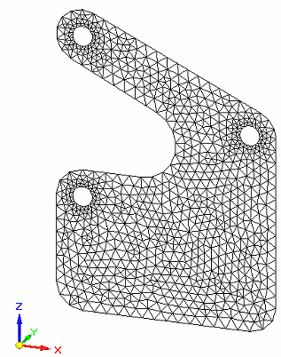
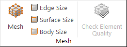
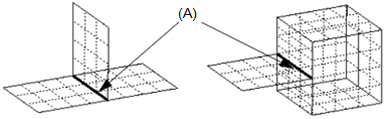
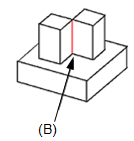

Meshes
Mesh overview
A mesh is a complex system of grid points that overlay the model geometry.

The mesh contains the material and structural properties, which define how the structure reacts to certain loading conditions.
Defining a mesh
To define and generate a mesh, use the Mesh command, which is located in the Mesh group on the Simulation tab, and on the Mesh shortcut menu in the Simulation navigator pane.

The Mesh dialog box, displays basic meshing controls appropriate to your mesh type:
-
Mesh type is specified when the study is created.
-
You can mesh the model without defining any loads or constraints, but a material must be assigned.
Additional meshing options are available in the Mesh Options dialog box. Mesh type options specify how the model is meshed, such as providing control on specific surfaces and edges.
Mesh type
Your model geometry largely determines the mesh type that is used to solve the model. Solid Edge Simulation supports several types of meshing.
-
Tetrahedral meshing breaks the part into a number of smaller volumes for analysis. For most models, tetrahedral meshing is appropriate.
-
Surface meshing provides a faster and more accurate analysis when dealing with thin bodies such as sheet metal and thin wall parts.
Note:Surface meshing is equivalent to shell meshing in NX Nastran and Femap.
-
The Beam mesh type is available for frames.
-
Assemblies that contain both sheet metal and standard parts or united bodies use a Mixed and General Bodies mesh type.
General bodies meshing produces a continuous mesh for solids and surfaces united into single bodies. This is useful for meshing parts with T-shaped junctions.
Example:T-shaped junctions at (A) and (B).


When a united body is meshed, the surface bodies receive a 2D mesh and the solids receive a 3D mesh. You can use the Simulation tab→Geometry group→Override Property command to apply a different material or material thickness to individual faces or surfaces on a surface body. For more information, see Mesh material properties.
Editing a mesh
After creating the initial mesh with the Mesh command, you can fine-tune the density, shape, and boundary of the mesh. You can:
-
Identify areas where the mesh needs to be improved on individual parts and bodies. For more information, see Examining the mesh.
-
Make changes in the Mesh Options dialog box, and then mesh again using the Remesh command.
-
Refine the mesh using the Edge Size, Surface Size, or Body Size commands. For more information, see Mesh sizing.
Note:Mesh sizing is not available for a Beam mesh.
Resolving meshing errors
When meshing fails, an error message dialog box is displayed. This dialog box contains suggestions for simplifying the model to resolve meshing errors.
One way to do this is to adjust the value used by the Prepare geometry for meshing algorithm in the Mesh Options dialog box, on the Mesh Sizing tab, under Geometry Preparation Options. Because you are only changing the mesh options, you can select the Remesh shortcut command to try meshing again.
When meshing fails on an assembly, the error message dialog box also lists all of the study geometry preceded by pass or fail icons. The parts that failed are selected automatically when you open the Geometry Inspector.
After you change the physical model, you must run the Mesh command again. Parts or components that meshed successfully the first time do not need to be reprocessed. In an assembly, only the parts that were changed are selected automatically for meshing.
How do I
Mesh the modelActivity: Use subjective mesh sizing
Activity: Apply a surface mesh to a sheet metal part
Activity: Size the mesh on an edge
Activity: Size the mesh on a surface
Learn more
Mesh sizingExamining the mesh
Identifying areas of poor mesh quality
Look up more details
Mesh dialog boxMesh Options dialog box
Body Size dialog box
Edge Size dialog box
Surface Size dialog box
Check Element Quality